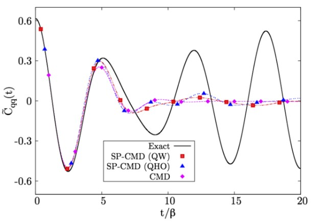

Professional Development
ACS National Meeting, San Diego, March 2025
Selected Peer-Review Papers
Computers in Chemistry, ACS National Meeting, Chicago, August 2022
L. Hernández de la Peña
Computational Methods for Statistical Mechanics, APS National Meeting, Denver, March 2020
L. Hernández de la Peña
Advances in Computational Methods for Statistical Physics, APS National Meeting, Boston, March 2019
L. Hernández de la Peña, R. van Zon, J. Schofield and G. Peslherbe
New Trends in Statistical Physics, XXVI Sitges Conference, Sitges, May 2019
L. Hernández de la Peña, R. van Zon, J. Schofield and G. Peslherbe
E. Brown and L. Hernández de la Peña, J. Chem. Educ. (2018)

50th Midwest Theoretical Chemistry Conference, Chicago, June 2018
L. Hernández de la Peña, L. Orr and P.-N. Roy

L. Orr, L. Hernández de la Peña and P.-N. Roy, J. Chem. Phys. (2017)

L. Hernández de la Peña, J. Phys. Chem. B (2016)


48th Midwest Theoretical Chemistry Conference, Pittsburgh, June 2016
L. Hernández de la Peña
L. Hernández de la Peña, Mol. Phys. 112, 929 (2014)

L. Hernández de la Peña and G. H. Peslherbe, J. Phys. Chem. B 114, 5404 (2010)

R. van Zon, L. Hernández de la Peña, G. H. Peslherbe and J. Schofield, Phys. Rev. E 78, 041104 (2008)

R. van Zon, L. Hernández de la Peña, G. H. Peslherbe and J. Schofield, Phys. Rev. E 78, 041103 (2008)

L. Hernández de la Peña, R. van Zon, J. Schofield, S. B. Opps, J. Chem. Phys. 126, 074106 (2007)

L. Hernández de la Peña, R. van Zon, J. Schofield, S. B. Opps, J. Chem. Phys. 126, 074105 (2007)

L. Hernández de la Peña and P. G. Kusalik, J. Chem. Phys. 125, 054512 (2006)

L. Hernández de la Peña, M. S. Gulam Razul, P. G. Kusalik, J. Chem. Phys. 123, 144506 (2005)

L. Hernández de la Peña, M. S. Gulam Razul, P. G. Kusalik, J. Phys. Chem. A 109, 7236-7241 (2005)

L. Hernández de la Peña and P. G. Kusalik, J. Am. Chem. Soc. 127, 5246-5251 (2005)

L. Hernández de la Peña and P. G. Kusalik, J. Chem. Phys. 121, 5992-6002 (2004)

L. Hernández de la Peña and P. G. Kusalik, Mol. Phys. 102, 927-938 (2004)